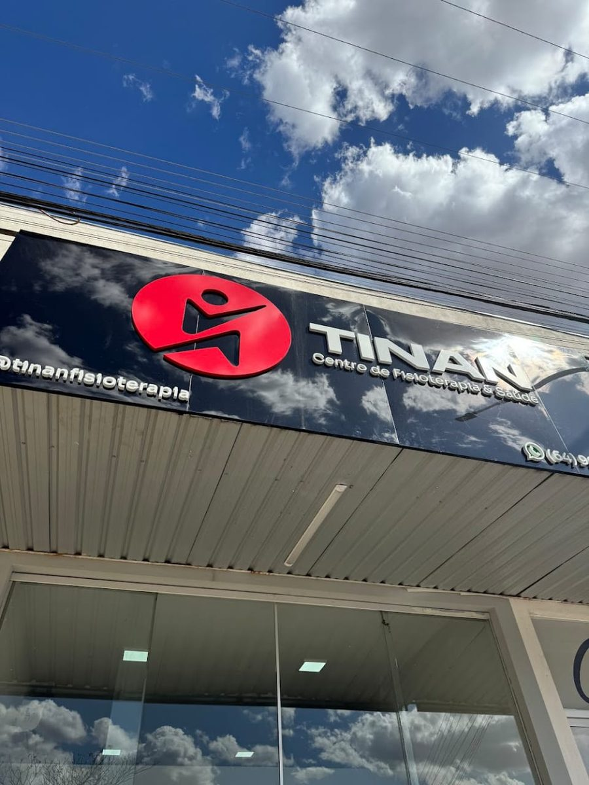
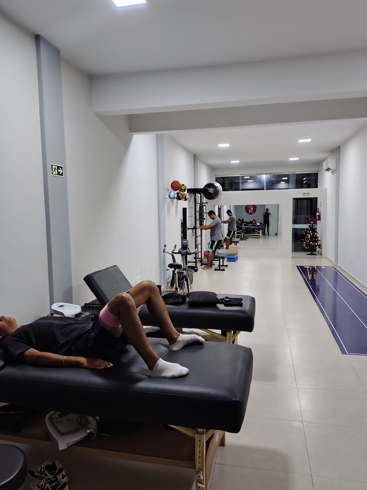
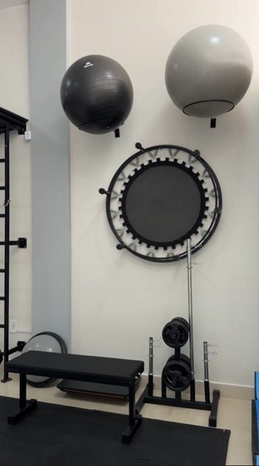

Conheça a história, o jeito de trabalhar e o espaço da TINAN, no Itaici 2, em Caldas Novas.
Acreditamos que cada corpo tem sua própria história — e merece um cuidado que respeite esse tempo.
Fundada em Caldas Novas, a TINAN nasceu do compromisso de oferecer um cuidado integrado e verdadeiramente humano: olhar para a pessoa como um todo, e não apenas para um diagnóstico isolado. Reunimos fisioterapia e nutrição em um só lugar, com atendimento multidisciplinar.
Nossa estrutura foi pensada para o conforto de quem chega: salas bem equipadas e um ambiente tranquilo e acolhedor. O grande diferencial está na comunicação da equipe: fisioterapeutas e nutricionista trabalham alinhados, para que o plano de tratamento seja contínuo e coerente entre as especialidades.
Trabalhamos com avaliação criteriosa, condutas explicadas com clareza e acompanhamento próximo em cada etapa. Cada paciente tem uma história única, e é a partir dela que desenhamos o caminho de recuperação.

Cada conduta nasce de uma conversa sobre a sua história e de uma avaliação física direcionada ao seu caso.
Fisioterapia e nutrição alinhadas, para que o cuidado não se perca entre uma especialidade e outra.
Você entende o que está sendo tratado, quais são as metas e participa das decisões do seu tratamento.
Ambientes preparados para acolher, tratar e recuperar, com equipamentos e espaços pensados para o seu conforto.





Horário de atendimento
Atendemos de segunda a sexta, das 8h às 20h, e aos sábados, das 8h às 12h.
(64) 99239-9515 tinanfisioterapia@gmail.com @tinanfisioterapia
Agendar pelo WhatsApp